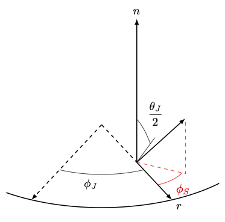
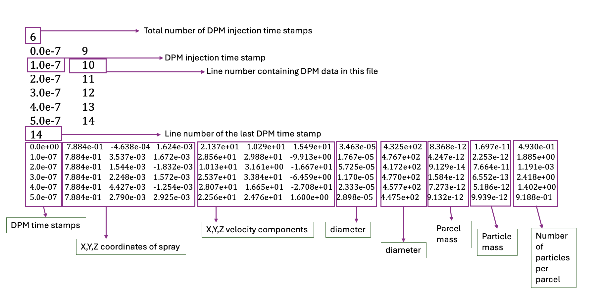
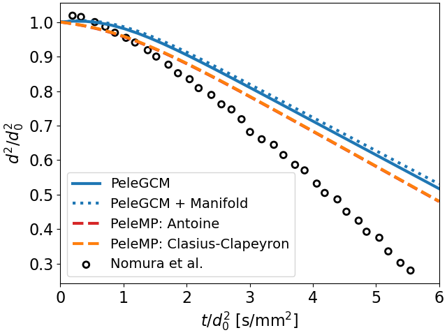
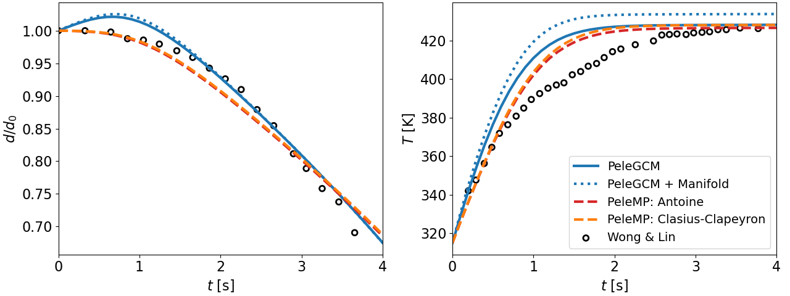
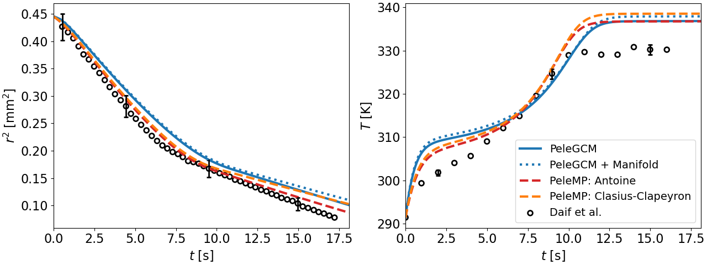
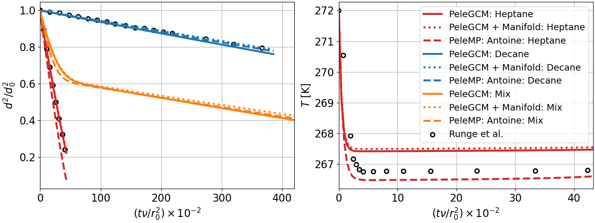
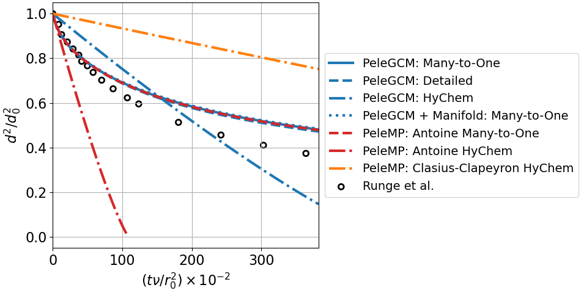
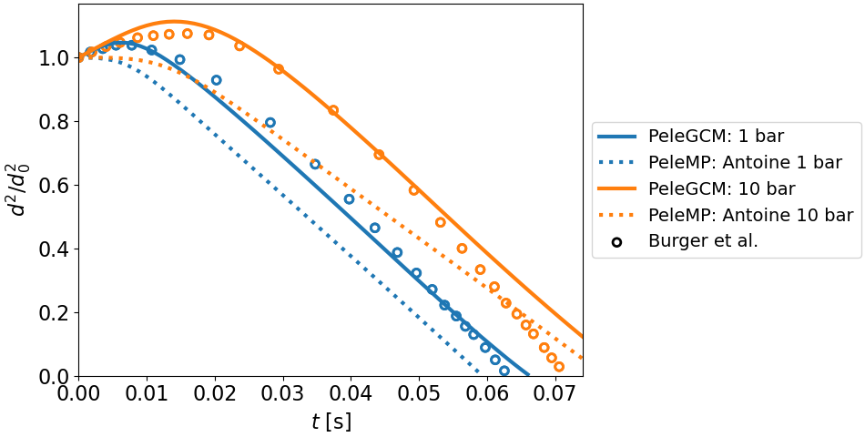

Spray
Spray Equations
This section outlines the modeling and mathematics for the spray routines. Firstly, spray modeling relies on the following assumptions:
Dilute spray: droplet volume inside an Eulerian cell is much smaller than the volume of the gas phase; the droplets can be modeled as Lagrangian point source terms relative to the Eulerian gas phase
Infinite conductivity model: temperature within a droplet is temporally varying but spatially uniform
One-third rule: the thermophysical properties in the film of an evaporating droplet can be approximated as a weighted average of the state at the droplet surface (weighted as 2/3) and the state of the surrounding gas (weighted as 1/3)
Ideal equilibrium: the liquid and vapor state at the surface of the droplet are in equilibrium
The radiation, Soret, and Dufour effects are neglected
Secondly, accurate spray modeling depends on accurate thermophysical and transport properties for both the gas and liquid phases. Gas-phase properties are obtained directly from the mechanism files in PelePhysics, while liquid-phase properties are derived from user-provided inputs for each liquid fuel species. Currently, two approaches are available for estimating liquid fuel properties:
The original PeleMP [1] method, which utilizes a combination of constant values and temperature-based fits.
A group contribution method (GCM) based on the work of Constantinou & Gani [2] [3] and Govindaraju & Ihme [4], previously implemented and validated in FuelLib.
Further details on the required inputs, as well as the formulations of both component-level and mixture-level liquid-phase properties, are provided in the Liquid Spray Properties section.
The evaporation models follow the work by Abramzon and Sirignano [5] and the multicomponent evaporation is based on work by Tonini. [6] Details regarding the energy balance are provided in Ge et al. [7] The subscript notation for this section is: \(d\) relates to the liquid droplet, \(v\) relates to the vapor state that is in equilibrium with the liquid and gas phase, \(L\) relates to the liquid phase, and \(g\) relates to the gas phase. The subscript \(r\) relates to the reference state with which to approximate the thermophysical and transport properties. This reference state is assumed to be in the evaporating film that surrounds the droplet state and is approximated as
where \(A = 1/3\) according the the one-third rule.
Typically, the liquid state contains a subset of the species present in the gas phase. However, we also consider generalized capability where the representation of the composition in the liquid phase can be more detailed than in the gas phase. This would occur, for example, when using a gas phase chemical mechanism for a single component surrogate, but using a multi-component representation of the liquid to capture the effects of multi-component vaporization on the volatilization of droplets. In this case, multiple liquid species are modeled with a single gas-phase species, which requires additional assumption and approximation; note that it is still assumed that each liquid species relates to only a single gas-phase species. \(N_L\) is the number of liquid species, and \(N_g\) is total number of gas-phase species, and the \(N_g \times N_L\) mapping from liquid-phase species to gas-phase species is denoted \(\mathbf{L}\). The \(i{\rm th}\) row of \(\mathbf{L}\) contains \(N_{L,i}\) ones corresponding to the liquid species that contribute to gas-phase species \(i\) and zeros elsewhere. There are \(N_{pc}\) gas species for which \(N_{L,i} > 0\), indicating that they participate in phase change. For convenience, we define the following sets of indices:
The \(i{\rm th}\) row of \(\mathbf{L}\) contains \(N_{L,i}\) ones corresponding to the liquid species that contribute to gas-phase species \(i\) and zeros elsewhere. For example, if we have \(N_L = 4\) liquid species and \(N_g = 3\) gas species, where liquid species 0, 1, and 3 contribute to gas-phase species 0, liquid species 2 contributes to gas-phase species 1, and no liquid species contribute to gas-phase species 2, then
with \(N_{L,0} = 3,\) \(N_{L,1} = 1,\) \(N_{L,2} = 0,\) and the \(N_{pc} = 2\) gas-phase species that participate in phase change. The corresponding sets are:
In the PelePhysics implementation, these sets are accessed through matrix operations using the mapping matrix \(\mathbf{L}\), which is stored in compressed sparse row (CSR) format.
Additional nomenclature: \(M_n\) is the molar mass of species \(n\), \(\overline{M}\) is the average molar mass of a mixture, and \(\mathcal{R}\) is the universal gas constant. \(Y_{g,i}\) and \(X_{g,i}\) are the mass and molar fractions of gas-phase species \(i\), and \(Y_{d,n}\) and \(X_{d,n}\) are the mass and molar fractions of liquid-phase droplet species \(n\), respectively. The user is required to provide a reference temperature for the liquid properties, \(T^*\), the critical temperature for each liquid species, \(T_{c,n}\), the boiling temperature for each liquid species at atmospheric pressure, \(T^*_{b,n}\), the latent heat and liquid specific heat at the reference temperature, \(h_{L,n}(T^*)\) and \(c_{p,L,n}(T^*)\), respectively. Note: this reference temperature is a constant value for all species and is not related to the reference state denoted by the subscript \(r\).
The equations of motion, mass, momentum, and energy for the Lagrangian spray droplet are:
where \(\mathbf{X}_d\) is the spatial vector, \(\mathbf{u}_d\) is the velocity vector, \(T_d\) is the droplet temperature, \(m_d\) is the mass of the droplet, \(\mathbf{g}\) is an external body force (like gravity), \(\dot{m}\) is evaporated mass, \(\mathcal{Q}_d\) is the heat transfer between the droplet and the surrounding gas, and \(\mathbf{F}_d\) is the momentum source term. The density of the liquid mixture, \(\rho_d\), depends on the liquid mass fractions of the dropet, \(Y_{d,n}\),
The droplets are assumed to be spherical with diameter \(d_d\). Therefore, the mass is computed as
The procedure is as follows for updating the spray droplet:
Interpolate the gas phase state to the droplet location using a trilinear interpolation scheme.
Compute the boiling temperature for liquid species \(n\) at the current gas phase pressure using the Clasius-Clapeyron relation
\[T_{b,n} = \left(\log\left(\frac{p_{\rm{atm}}}{p_g}\right) \frac{\mathcal{R}}{M_n h_{L,n}(T^*_{b,n})} + \frac{1}{T^*_{b,n}}\right)\]The boiling temperature of the droplet is computed as
\[T_{d,b} = \sum_{n\in \mathcal{S}_L} Y_{d,n} T_{b,n}\]Since we only have the latent heat at the reference condition temperature, we estimate the enthalpy at the boiling condition using Watson’s law
\[h_{L,n}(T^*_{b,n}) = h_{L,n}(T^*) \left(\frac{T_{c,n} - T^*}{T_{c,n} - T^*_{b,n}} \right)^{-0.38}\]Compute the latent heat for liquid species \(n\) in the droplet using
\[h_{L,n}(T_d) = h_{g,i}(T_d) - h_{g,i}(T^*) + h_{L,n}(T^*) - c_{p,L,n}(T^*) (T_d - T^*) \,.\]where \(i\) is the gas-phase species dependent on liquid species \(n\) (usually the same, except when multiple liquid species are modeled using the same gas species).
Compute the saturation pressure, \(p_{{\rm{sat}}, n}\), using one of the methods described in the Liquid Spray Properties section.
Estimate the composition of the vapor state using Raoult’s law. First, convert from liquid state mass fractions to mole fractions for all \(N_L\) liquid species and apply Raoult’s law to obtain the vapor mole fractions:
\[ \begin{align}\begin{aligned}X_{d,n} &= \frac{Y_{d,n}}{M_n}\left(\sum_{k \in \mathcal{S}_L} \frac{Y_{d,k}}{M_k}\right)^{-1} \quad \forall\; n \in \mathcal{S}_L,\\X_{v,n} &= \frac{X_{d,n} p_{{\rm{sat}},n}}{p_g} \quad \forall\; n \in \mathcal{S}_L.\end{aligned}\end{align} \]Then, collapse these mole fractions onto the species available in the gas phase, if needed:
\[X_{v,i} = \sum_{n \in \mathcal{S}_{L}} \mathbf{L}_{i,n}X_{v,n} = \sum_{n \in \mathcal{S}_{L,i}} X_{v,n} \quad \forall\; i \in \mathcal{S}_{pc},\]and compute the mass fractions in the vapor state:
\[ \begin{align}\begin{aligned}\overline{M}_v &= \sum_{i \in \mathcal{S}_{pc}} X_{v,i} M_i\\X_{v,{\rm{sum}}} &= \sum_{i \in \mathcal{S}_{pc}} X_{v,i}\\Y_{v,i} &= \frac{X_{v,i} M_i}{\overline{M}_v + \overline{M}_g (1 - X_{v,{\rm{sum}}})} \quad \forall\; i \in \mathcal{S}_{pc}.\end{aligned}\end{align} \]If \(X_{g,n} p_g > p_{{\rm{sat}},n}\), then \(X_{v,n} = Y_{v,n} = 0\) for that particular species in the equations above, since that means the gas phase is saturated. For cases with gas species that depend on multiple liquid species, we don’t have access to the mole fraction of each liquid species in the gas phase (\(X_{g,n}\)). Therefore, we estimate it by distributing the gas species mole fraction across all the liquid species on which depends in proportion to the liquid composition:
\[X_{g,n} = \frac{X_{d,n}}{\sum_{k \in \mathcal{S}_{L,i}} X_{d,k}} X_{g,i} \quad \forall\; n \in \mathcal{S}_{L,i}, \; i \in \mathcal{S}_{pc} .\]The mass fractions in the reference state for the fuel are computed using the one-third rule and the remaining reference mass fractions are normalized gas phase mass fractions to ensure they sum to 1
\[\begin{split}Y_{r,i} = \left\{\begin{array}{c l} \displaystyle Y_{v,i} + A (Y_{g,i} - Y_{v,i}) & {\text{if $i \in \mathcal{S}_{pc}$ and $Y_{v,i} > 0$}}, \\ \displaystyle\frac{1 - \sum_{k \in \mathcal{S}_{pc} | Y_{v,k} > 0 } Y_{r,k}}{1 - \sum_{k \in \mathcal{S}_{pc} | Y_{v,k} > 0 } Y_{g,k}} Y_{g,i} & {\text{otherwise}}, \end{array}\right. \quad \forall\; i \in \mathcal{S}_g.\end{split}\]The average molar mass, specific heat, and density of the reference state in the gas film are computed as
\[ \begin{align}\begin{aligned}\overline{M}_r &= \left(\sum_{i \in \mathcal{S}_g} \frac{Y_{r,i}}{M_i}\right)^{-1},\\c_{p,r} &= \sum_{i \in \mathcal{S}_g} Y_{r,i} c_{p,g,i}(T_r),\\\rho_r &= \frac{\overline{M}_r p_g}{\mathcal{R} T_r}.\end{aligned}\end{align} \]Transport properties are computed using the reference state: dynamic viscosity, \(\mu_r\), thermal conductivity, \(\lambda_r\), and mass diffusion coefficient for species \(n\), \(D_{r,n}\).
It is important to note that PelePhysics provides mixture averaged mass diffusion coefficient \(\overline{(\rho D)}_{r,n}\), which is converted into the binary mass diffusion coefficient using
\[(\rho D)_{r,i} = \overline{(\rho D)}_{r,i} \overline{M}_r / M_i \quad \forall\; i \in \mathcal{S}_{pc}.\]Mass diffusion coefficient is then normalized by the total fuel vapor molar fraction
\[(\rho D)^*_{r,i} = \frac{X_{v,i} (\rho D)_{r,i}}{X_{v,{\rm{sum}}}} \; \forall\; i \in \mathcal{S}_{pc},\]which can be consistently distributed across liquid species in the many-to-one case:
\[(\rho D)^*_{r,n} = \frac{X_{v,n}}{X_{v,i}} (\rho D)^*_{r,i} \quad \forall n \in \mathcal{S}_{L,i} \quad \forall\; i \in \mathcal{S}_{pc}\](further investigation needed to determine if molecular weight scaling is also needed here). The total is
\[(\rho D)_r = \sum_{i \in \mathcal{S}_{pc}} (\rho D)_{r,i}^*.\]The momentum source is a function of the drag force
\[\mathbf{F}_d = \frac{1}{2} \rho_r C_D A_d \left\|\Delta \mathbf{u}\right\| \Delta \mathbf{u}\]where \(\Delta \mathbf{u} = \mathbf{u}_g - \mathbf{u}_d\), \(A_d = \pi d_d^2/4\) is the frontal area of the droplet, and \(C_D\) is the drag coefficient for a sphere, which is estimated using the standard drag curve for an immersed sphere
\[\begin{split}C_D = \frac{24}{{\rm{Re}}_d}\left\{\begin{array}{c l} 1 & {\text{If Re$_d$ < 1}}, \\ \displaystyle 1 + \frac{{\rm{Re}}^{2/3}_d}{6} & {\text{Otherwise}}. \end{array}\right.\end{split}\]The droplet Reynolds number is defined as
\[{\rm{Re}}_d = \frac{\rho_r d_d \left\|\Delta \mathbf{u}\right\|}{\mu_r}\]The mass source term is modeled according to Abramzon and Sirignano (1989). The following non-dimensional numbers and factors are used:
\[ \begin{align}\begin{aligned}F(B) &= (1 + B)^{0.7}\frac{\log(1 + B)}{B}\\F_2 &= \max(1, \min(400, {\rm{Re}}_d)^{0.077})\\{\rm{Pr}}_r &= \frac{\mu_r c_{p,r}}{\lambda_r}\\{\rm{Sc}}_r &= \frac{\mu_r}{(\rho D)_r}\\{\rm{Sh}}_0 &= 1 + (1 + {\rm{Re}}_d {\rm{Sc}}_r)^{1/3} F_2\\{\rm{Nu}}_0 &= 1 + (1 + {\rm{Re}}_d {\rm{Pr}}_r)^{1/3} F_2\\{\rm{Sh}}^* &= 2 + \frac{{\rm{Sh}}_0 - 2}{F(B_M)}\\{\rm{Nu}}^* &= 2 + \frac{{\rm{Nu}}_0 - 2}{F(B_T)}\end{aligned}\end{align} \]The Spalding numbers for mass transfer, \(B_M\), and heat transfer, \(B_T\), are computed using
\[ \begin{align}\begin{aligned}B_M &= \displaystyle\frac{\sum_{i \in \mathcal{S}_{pc} | Y_{v,i} > 0 } Y_{v,i} - \sum_{i \in \mathcal{S}_{pc} | Y_{v,i} > 0 } Y_{g,i}}{1 - \sum_{i \in \mathcal{S}_{pc}| Y_{v,i} > 0} Y_{v,i}}\\B_T &= \left(1 + B_M\right)^{\phi} - 1\end{aligned}\end{align} \]where
\[\phi = \frac{c_{p,r}^f (\rho D)_r {\rm{Sh}}^*}{\lambda_r {\rm{Nu}}^*}\]and \(c_{p,r}^f\) is the heat capacity of the fuel at the reference/skin state temperature. Note the dependence of \({\rm{Nu}}^*\) on \(B_T\) means an iterative scheme is required to solve for both. The droplet vaporization rate and heat transfer become
\[ \begin{align}\begin{aligned}\dot{m}_n &= -\pi (\rho D)_{r,n}^* d_d {\rm{Sh}}^* \log(1 + B_M). \; \forall\; n \in \mathcal{S}_L,\\\mathcal{Q}_d &= \pi \lambda_r d_d (T_g - T_d) {\rm{Nu}}^* \frac{\log(1 + B_T)}{B_T}\end{aligned}\end{align} \]If the gas phase is saturated for all liquid species, the equations for heat and mass transfer become
\[ \begin{align}\begin{aligned}\dot{m}_n &= 0\\\mathcal{Q}_d &= \pi \lambda_r d_d (T_g - T_d) {\rm{Nu}}_0\end{aligned}\end{align} \]
To alleviate conservation issues at AMR interfaces, each parcel only contributes to the gas phase source term of the cell containing it. The gas phase source terms for a single parcel to the cell are
\[ \begin{align}\begin{aligned}S_{\rho} &= \mathcal{C} \sum_{n \in \mathcal{S}_L} \dot{m}_n,\\S_{\rho Y_i} &= \mathcal{C} \sum_{n \in \mathcal{S}_{L,i}} \dot{m}_n \quad \forall\; i \in \mathcal{S}_{pc},\\\mathbf{S}_{\rho \mathbf{u}} &= \mathcal{C} \mathbf{F}_d,\\S_{\rho h} &= \mathcal{C}\left(\mathcal{Q}_d + \sum_{n \in \mathcal{S}_L} \dot{m}_n h_{g,n}(T_d)\right),\\S_{\rho E} &= S_{\rho h} + \frac{1}{2}\left\|\mathbf{u}_d\right\| S_{\rho} + \mathcal{C} \mathbf{F}_d \cdot \mathbf{u}_d\end{aligned}\end{align} \]where
\[\mathcal{C} = -\frac{N_{d}}{V_{\rm{cell}}},\]\(N_{d}\) is the number of droplets per computational parcel, and \(V_{\rm{cell}}\) is the volume for the cell of interest. Note that the cell volume can vary depending on AMR level and if an EB is present.
Warning
Dimensional Assumptions in the Spray Model
The spray model assumes spherically symmetric droplets and is inherently three-dimensional. For two-dimensional simulations, the domain is treated as one cell wide in the \(z\)-direction, with \(L_z = \Delta x\), so the volume in the gas-phase source terms is:
For nominally single droplet cases, this effectively places an infinite array of droplets spaced \(\Delta x\) apart in \(z\), exaggerating Stefan flow in the \(x\)- and \(y\)-directions and omitting flow in \(z\). While this has minimal impact on droplet diameter or temperature, it can distort the surrounding gas-phase flow, especially for low \(\text{Re}_d\).
For such cases, fully three-dimensional simulations are recommended.
Spray Equations with Manifold Models
The Spray implementation for Manifold-based combustion models (i.e., in the gas phase reduced-dimensional manifold parameters are transported rather than species) is meant to follow that of the implementation and assumptions described above for simulations using finite rate gas phase chemistry mechanisms. However, a major additional assumption introduced for the first pass at this implementation is to substantially neglect evolution of the energy equation. Instead, it is assumed that the enthalpy deficit in the gas phase due to enthalpy of vaporization is accounted for in the boundary conditions used to generate the reduced-order manifold that defines gas phase properties. For the manifold model implementation, the liquid phase remains represented by the same set of liquid species as in the finite rate chemistry implementation, and the liquid phase equations of motion, mass, momentum, and energy remain unchanged from those listed above. However, because the gas phase now involved transport of manifold parameters rather than species, the implementation must be adjusted to properly estimate the gas phase composition near the droplets for the purpose of computing phase quilibria and phase change rates. The source terms must also be appropriately transformed from species source terms to manifold parameter source terms for coupling to the gas phase.
The manifold parameters are denoted as \(\xi_k\) and are defined as linear combinations of species \(\xi_k = W_{ki} Y_i\). Gas phase properties may be obtained as functions of the Manifold, \(\phi = \mathcal{F}(\xi_k)\) where \(\phi = (\bar{M}, Y_i, T, ...)\). Similarly to detailed chemistry, we allow that multiple liquid phase species may contribute to a single species that can be extracted from the manifold.
The modified procedure for Manifold-based gas phase chemistry is as follows for updating the spray droplet:
Unchanged from Step 1 above.
Unchanged from Step 2 above.
The Manifold model does not provide information about species enthalpies. However, the enthalpy of vaporization term is not directly required in the present implementation, so this step to compute \(h_{L,n}(T_d)\) is omitted.
Only Antoine-based computation of \(p_{\text{sat}}\) can be used for the gas phase, as the Clausius-Clapeyron relationship requires \(h_{L,n}(T_d)\), which was not computed in the previous step.
Estimate the vapor state using Raoult’s law. Note that the vapor state must be estimated in terms of Manifold parameters, rather than species. First, vapor-liquid equilibrium calculations are used to compute values in terms of species in the same manner as for detailed chemistry, but these are then converted to values in terms of Manifold parameters.
\[ \begin{align}\begin{aligned}X_{d,n} &= \frac{Y_{d,n}}{M_n}\left(\sum_{k \in \mathcal{S}_L} \frac{Y_{d,k}}{M_k}\right)^{-1} \quad \forall\; n \in \mathcal{S}_L.\\X_{v,n} &= \frac{X_{d,n} p_{{\rm{sat}},n}}{p_g} \quad \forall\; n \in \mathcal{S}_L.\end{aligned}\end{align} \]Then, collapse these mole fractions onto the species available in the gas phase, if needed:
\[X_{v,i} = \sum_{n \in \mathcal{S}_{L,i}} X_{v,n} \quad \forall\; i \in \mathcal{S}_{pc},\]and compute the mass fractions in the vapor state:
\[ \begin{align}\begin{aligned}\overline{M}_v &= \sum_{i \in \mathcal{S}_{pc}} X_{v,i} M_i\\X_{v,{\rm{sum}}} &= \sum_{i \in \mathcal{S}_{pc}} X_{v,i}\\Y_{v,i} &= \frac{X_{v,i} M_i}{\overline{M}_v + \overline{M}_g (1 - X_{v,{\rm{sum}}})} \quad \forall\; i \in \mathcal{S}_{pc},\end{aligned}\end{align} \]noting that \(\overline{M}_g\), the mean molecular weight in the gas phase, must be available as one of the \(\phi\) that can be evaluated from the manifold, and that molecular weights for the gas phase species in \(\mathcal{S}_{pc}\) must also be specified as part of the manifold model. With these vapor phase composition, we could compute the reference state compositions in the same manner as for detailed chemistry, but in order to evaluate properties at the reference state, we require the composition to be projected onto the manifold. To do this, we start from the detailed species representation of the reference state:
\[\begin{split}Y_{r,i} = \left\{\begin{array}{c l} \displaystyle Y_{v,i} + A (Y_{g,i} - Y_{v,i}) & {\text{if $i \in \mathcal{S}_{pc}$ and $Y_{v,i} > 0$}}, \\ \displaystyle\frac{1 - \sum_{k \in \mathcal{S}_{pc} | Y_{v,k} > 0 } Y_{r,k}}{1 - \sum_{k \in \mathcal{S}_{pc} | Y_{v,k} > 0 } Y_{g,k}} Y_{g,i} & {\text{otherwise}}, \end{array}\right. \quad \forall\; i \in \mathcal{S}_g.\end{split}\]and note that \(\xi_i = W_{ij} Y_j\). We note that \(Y_{g,i} \: \forall\; i \in \mathcal{S}_g\) can be evaluated from the manifold, but to reduce the number of variables that must be stored/evaluated in the manifold model, we can make some simplifications so we only have to evaluate \(Y_{g,i} \: \forall\; i \in \mathcal{S}_{pc}\). We define
\[\begin{split}Y^{pc}_{g,i} = \left\{\begin{array}{c l} \displaystyle Y_{g,i} & {\text{if $i \in \mathcal{S}_{pc}$ and $Y_{v,i} > 0$}}, \\ \displaystyle 0.0 & {\text{otherwise}}, \end{array}\right. \quad \forall\; i \in \mathcal{S}_g.\end{split}\]and its complement \(Y^{nc}_{g,i}\) such that \(Y^{pc}_{g,i} + Y^{nc}_{g,i} = Y_{g,i}\), as well as similar definitions for \(Y^{nc}_{r,i}, Y^{pc}_{r,i}, Y^{nc}_{v,i}, \text{and } Y^{pc}_{v,i}\). With these definitions,
\[\begin{split}Y^{pc}_{r,i} &= Y^{pc}_{v,i} + A (Y^{pc}_{g,i} - Y^{pc}_{v,i}), \\ Y^{nc}_{r,i} &= \theta Y^{nc}_{g,i}, \\ \text{where } \theta &= \frac{1 - \sum_{k \in \mathcal{S}_{pc} | Y_{v,k} > 0 } Y_{r,k}}{1 - \sum_{k \in \mathcal{S}_{pc} | Y_{v,k} > 0 } Y_{g,k}} = \frac{1 - \sum_{k \in \mathcal{S}_{pc} | Y_{v,k} > 0 } Y^{pc}_{r,k}}{1 - \sum_{k \in \mathcal{S}_{pc} | Y_{v,k} > 0 } Y^{pc}_{g,k}}\end{split}\]Therefore, in order to compute \(\xi_{r,k} = W_{ki} Y_{r,i}\) from the available data \((\xi_{g,k}, Y^{pc}_{g,i}(\xi_{g,k}), \text{and } Y^{pc}_{v,i} )\), we note
\[\begin{split}\xi_{r,k} &= W_{ki} (Y^{pc}_{r,i} + Y^{nc}_{r,i}) = W_{ki} Y^{pc}_{r,i} + W_{ki} \theta Y^{nc}_{g,i}, \text{and} \\ \xi_{g,k} &= W_{ki} (Y^{pc}_{g,i} + Y^{nc}_{g,i}) \therefore W_{ki} Y^{nc}_{g,i} = \xi_{g,j} - W_{ki} Y^{pc}_{g,i}.\end{split}\]We can therefore compute \(\xi_{r,k}\) from only available data using:
\[\xi_{r,k} = W_{ki} Y^{pc}_{r,i} + \theta (\xi_{g,k} - W_{ki} Y^{pc}_{g,i} ).\]The present implementation specializes to the case (common in combustion modeling) where the manifold parameters \(\xi_k\) are either progress variable like \((W_{ki}=0 \; \forall\; i \in \mathcal{S}_{pc})\) or mixture fraction like (\(W_{ki}=1\) for one \(i \in \mathcal{S}_{pc}\) and \(0\) for all others).
Proceeds as in the ideal gas implementation, but \(\bar{M}_r\) and \(\rho_r\) are computed as functions of the manifold \(\phi(\xi_k))\). However, we note that the computed reference temperature \(T_r^* = \phi(\xi_{k,r})\) may deviate significantly from the nominal reference temperature \(T_r = T_d + A (T_g - T_d)\). To correct for this, the density obtained from the table is rescaled using an ideal gas law assumption:
\[\rho_r = \rho_r^* \frac{T_r^*}{T_r}\]where \(\rho_r^*\) is the value obtained from the manifold model. Heat capacities \(c_{P,r}\) and \(c^f_{P,r}\) are obtained from the manifold model without correction due to the relatively week dependence on temperature for heat capacity.
Again, \(\mu_r\), \(\lambda_r\), and \(\rho D_{r,n}\) are computed as functions of the manifold. Due to the temperature discrepancy noted in the previous step, a rescaling based on Sutherland’s law is performed for all the transport coefficients, shown here for \(\mu_r\):
\[\mu_r = \mu_r^* \left(\frac{T_r}{T_r^*}\right)^{3/2} \frac{T_r^* + S}{T_r + S}\]where \({}^*\) indicates a quantity obtained from the manifold model \(\phi(\xi_k)\).
Diffusion coefficient modification proceeds as in the detailed chemistry case.
Momentum source term computation proceeds as in the detailed chemistry case.
Mass source term proceeds as in the detailed chemistry case. Energy source term is ignored.
Gas phase source terms follow the detailed chemistry implementation, except that the energy/enthalpy equations are ignored and
\[S_{\rho \xi_k} = W_{ki} S_{\rho Y_i} = W_{ki} \mathcal{C} \sum_{n \in \mathcal{S}_{L,i}} \dot{m}_n \quad \forall\; i \in \mathcal{S}_{pc},\]
Spray Flags and Inputs
In the
GNUmakefile, specifyUSE_PARTICLES = TRUEandSPRAY_FUEL_NUM = NwhereNis the number of liquid species being used in the simulation.Depending on the gas phase solver, spray solving functionality can be turned on in the input file using
pelec.do_spray_particles = 1orpeleLM.do_spray_particles = 1.There are many required
particles.flags in the input file. For demonstration purposes, 2 liquid species ofNC7H16andNC10H22will be used.The liquid fuel species names are specified using
particles.fuel_species = NC7H16 NC10H22. The number of fuel species listed must matchSPRAY_FUEL_NUM.Although this is not required or typical, if the evaporated mass should contribute to a different gas-phase species than what is modeled in the liquid phase, use
particles.dep_fuel_species. For example, if we wanted the evaporated mass from both liquid species to contribute to a different species calledSP3, we would putparticles.dep_fuel_species = SP3 SP3. All species specified must be present in the chemistry transport and thermodynamic data.
The following table lists other inputs related to
particles.
Input |
Description |
Required |
Default Value |
|---|---|---|---|
|
Names of liquid species |
Yes |
None |
|
Name of gas-phase species to contribute |
No |
Inputs to
|
|
Name of manifold parameter to contribute (Manifold EOS only) |
Yes |
None |
|
Couple momentum with gas phase |
No |
|
|
Evaporate mass and exchange heat with gas phase |
No |
|
|
Fix particles in space |
No |
|
|
\(N_{d}\); Number of droplets per parcel |
No |
|
|
Output ascii files of spray data |
No |
|
|
Particle CFL number for limiting time step |
No |
|
|
Ascii file name to initialize droplets |
No |
Empty |
Liquid Spray Properties
The required inputs and corresponding correlations for the original PeleMP [1] and the FuelLib-based GCM are outlined in the subsections below. Please note the following details:
Units:
PeleLM and PeleLMeX use MKS units, while PeleC uses CGS units. The Spray inputs follow the same convention.
For example, when running a spray simulation coupled with PeleC, the values for
particles.fuel_cpmust be provided in erg/g.
Input flags:
A number of
particles.flags are required in the input file to define liquid fuel properties.For demonstration purposes, two liquid species will be used:
NC7H16andNC10H22.Many values must be specified on a per-species basis. In this example, one would need to specify:
particles.NC7H16_crit_temp = 540critical temperature of 540 K forNC7H16particles.NC10H22_crit_temp = 617critical temperatures of 617 K forNC10H22.
Additional method-specific inputs:
The following tables list other required inputs related to
particles., whereSPrefers to a given fuel species name.
The source code for the liquid spray properties can be found in SprayProperties.H.
PeleMP Implementation
Input |
Description |
Required |
Default Value |
|---|---|---|---|
|
Liquid reference temperature |
Yes |
None |
|
Critical temperature |
Yes |
None |
|
Boiling temperature at atmospheric pressure |
Yes |
None |
|
Liquid \(c_p\) at reference temperature |
Yes |
None |
|
Latent heat at reference temperature |
Yes |
None |
|
Liquid density |
Yes |
None |
|
Liquid thermal conductivity |
No |
|
|
Liquid dynamic viscosity |
No |
|
|
Liquid surface tension |
No |
If an Antoine fit for saturation pressure is used, it must be specified for individual species,
particles.SP_psat = 4.07857 1501.268 -78.67 1.E5
where the numbers represent coefficients \(a_n\), \(b_n\), \(c_n\), and unit conversion \(d_n\), respectively in:
\[p_{\rm{sat},n}(T) = d_n 10^{a_n - b_n / (T + c_n)}.\]If no fit is provided, the saturation pressure is estimated using the Clasius-Clapeyron relation
\[p_{{\rm{sat}}, n} = p_{\rm{atm}} \exp\left(\frac{h_{L,n}(T_d) M_n}{\mathcal{R}} \left(\frac{1}{T^*_{b,n}} - \frac{1}{T_d}\right)\right)\]
Temperature based fits for liquid density, thermal conductivity, and dynamic viscosity can be used; these can be specified as
particles.SP_rho = 10.42 -5.222 1.152E-2 4.123E-7 particles.SP_lambda = 7.243 1.223 4.223E-8 8.224E-9 particles.SP_mu = 7.243 1.223 4.223E-8 8.224E-9
where the numbers represent \(a_n\), \(b_n\), \(c_n\), and \(d_n\), respectively in:
\[ \begin{align}\begin{aligned}\rho_{L,n} \,, \lambda_{L,n} = a_n + b_n T + c_n T^2 + d_n T^3\\\mu_{L,n} = a_n + b_n / T + c_n / T^2 + d_n / T^3\end{aligned}\end{align} \]If only a single value is provided, \(a_n\) is assigned to that value and the other coefficients are set to zero, effectively using a constant value for the parameters.
FuelLib-Based GCM
Currently the GCM approach of estimating liquid fuel properties is only available in PeleLMeX and requires:
Setting the compile-time flag
SPRAY_GCM=TRUEin the case’sGNUmakefileGenerating a liquid-fuel-specific GCM input file from FuelLib, and copying the input file into the case directory.
The process for generating this input file is provided in FuelLib’s tutorial: Exporting Properties for Pele.
An example of using the GCM in Pele is provided in
PeleLMeX/Exec/RegTests/SingleDropEvap.
The following inputs are generated from FuelLib for each liquid fuel species.
Input |
Description |
Required |
|---|---|---|
|
Compound family |
Yes |
|
Molecular weight |
Yes |
|
Critical temperature |
Yes |
|
Critical pressure |
Yes |
|
Critical volume |
Yes |
|
Boiling temperature at atmospheric pressure |
Yes |
|
Critical temperature |
Yes |
|
Molecular volume |
Yes |
|
GCM coefficients for specific heat |
Yes |
|
Latent heat at 298.15 K |
Yes |
The specific equations, correlations and mixture rules used in the GCM implementation are detailed in the Fuel Property Prediction Model section of FuelLib’s documentation.
Spray Injection
Templates to facilitate and simplify spray injection are available. To use them, changes must be made to the input and SprayParticlesInitInsert.cpp files. Inputs related to injection use the spray. parser name. To create a jet in the domain, modify the InitSprayParticles() function in SprayParticleInitInsert.cpp. Here is an example:
void
SprayParticleContainer::InitSprayParticles(
const bool init_parts)
{
int num_jets = 1;
m_sprayJets.resize(num_jets);
std::string jet_name = "jet1";
m_sprayJets[0] = std::make_unique<SprayJet>(jet_name, Geom(0));
return;
}
This creates a single jet that is named jet1. This name will be used in the input file to reference this particular jet. For example, to set the location of the jet center for jet1, the following should be included in the input file,
spray.jet1.jet_cent = 0. 0. 0.
No two jets may have the same name. If an injector is constructed using only a name and geometry, the injection parameters are read from the input file. Here is a list of injection related inputs:
Input |
Description |
Required |
|---|---|---|
|
Jet center location |
Yes |
|
Jet normal direction |
Yes |
|
Jet velocity magnitude |
Yes |
|
Jet diameter |
Yes |
|
\(\theta_J\); Full spread angle in degrees from the jet normal direction; droplets vary from \([-\theta_J/2,\theta_J/2]\) |
Yes |
|
Temperature of the injected liquid |
Yes |
|
Mass fractions of the injected
liquid based on
|
Yes, if
|
|
\(\dot{m}_{\rm{inj}}\); Mass flow rate of the jet |
Yes |
|
Sets hollow cone injection with angle \(\theta_J/2\) |
No (Default: 0) |
|
\(\theta_h\); Adds spread to hollow cone \(\theta_J/2\pm \theta_h\) |
No (Default: 0) |
|
\(\phi_S\); Adds a swirling component along azimuthal direction |
No (Default: 0) |
|
Beginning and end time for jet |
No |
|
Droplet diameter distribution
type: |
Yes |

9 Demonstration of injection angles. \(\phi_J\) varies uniformly from \([0, 2 \pi]\)
Care must be taken to ensure the amount of mass injected during a time step matches the desired mass flow rate. For smaller time steps, the risk of over-injecting mass increases. To mitigate this issue, each jet accounts for three values: \(N_{P,\min}\), \(m_{\rm{acc}}\), and \(t_{\rm{acc}}\) (labeled in the code as m_minParcel, m_sumInjMass, and m_sumInjTime, respectively). \(N_{P,\min}\) is the minimum number of parcels that must be injected over the course of an injection event; this must be greater than or equal to one. \(m_{\rm{acc}}\) is the amount of uninjected mass accumulated over the time period \(t_{\rm{acc}}\). The injection routine steps are as follows:
The injected mass for the current time step is computed using the desired mass flow rate, \(\dot{m}_{\rm{inj}}\) and the current time step
\[m_{\rm{inj}} = \dot{m}_{\rm{inj}} \Delta t + m_{\rm{acc}}\]The time period for the current injection event is computed using
\[t_{\rm{inj}} = \Delta t + t_{\rm{acc}}\]Using the average mass of an injected parcel, \(N_{d} m_{d,\rm{avg}}\), the estimated number of injected parcels is computed
\[N_{P, \rm{inj}} = m_{\rm{inj}} / (N_{d} m_{d, \rm{avg}})\]
If \(N_{P, \rm{inj}} < N_{P, \min}\), the mass and time is accumulated as \(m_{\rm{acc}} = m_{\rm{inj}}\) and \(t_{\rm{acc}} = t_{\rm{inj}}\) and no injection occurs this time step.
Otherwise, \(m_{\rm{inj}}\) mass is injected and convected over time \(t_{\rm{inj}}\) and \(m_{\rm{acc}}\) and \(t_{\rm{acc}}\) are reset.
If injection occurs, the amount of mass injected, \(m_{\rm{actual}}\), is summed and compared with the desired mass flow rate. If \(m_{\rm{actual}} / t_{\rm{inj}} - \dot{m}_{\rm{inj}} > 0.05 \dot{m}_{\rm{inj}}\), then \(N_{P,\min}\) is increased by one to reduce the likelihood of over-injecting in the future. A balance is necessary: the higher the minimum number of parcels, the less likely to over-inject mass but the number of time steps between injections can potentially grow as well.
Spray data derived from ANSYS Fluent DPM solution files can also be used to inject spray particles into the fluid domain. To use this feature, initialize a spray jet (named jet_dpm, say) by using the statement spray.jetnames=jet_dpm in the input file as previously mentioned. In order to use the ANSYS Fluent DPM capability, set the boolean input variable spray.jet_dpm.read_from_dpm_file to true and specify the DPM file name by spray.jet_dpm.dpm_filename=<filename>.
The DPM data in the file will correspond to a specified time-gap, but it can be made to repeat periodically by specifying spray.jet_dpm.is_dpm_periodic=true. Otherwise, spray particle injection will cease after the final DPM time is reached. The spray injection can be set to start from a specific DPM time stamp by specifying
spray.jet_dpm.initial_injection_dpm_time=<DPM time stamp>. Similarly, the spray injection can also be set to start from a specific flow time by setting spray.jet_dpm.initial_injection_flow_time to the appropriate value. If the coordinate system used in the ANSYS Fluent DPM file is different from that in Pele,
one can use spray.jet_dpm.trans_matrix and spray.jet_dpm.translation to specify the direction cosine matrix (3X3 matrix) and the translation vector (<dx,dy,dz>) to align both the coordinate systems.
The DPM file has a specific format and a typical file is shown below:

Spray Validation
Single Droplet Tests
Single droplet tests are performed in 2D with PeleLMeX and compared with experimental results published in literature. These tests are setup in PeleLMeX/Exec/RegTests/SingleDropEvap and can be run with the Validate.py script. To run a test case with the PeleMP or GCM liquid properties, simply run Validate.py with the desired variables for case_name, LiqPropsType, and the method for calculating \(p_{\rm sat}\) for the PeleMP model. Using the build flag -b ensures the correct executable is built for each case. For example:
# Build a new executable and run WongLin with GCM
python Validate.py -b -c WongLin
# Build a new executable and run WongLin with PeleMP and Clasius-Clapeyron psat
python Validate.py -b -c WongLin -l mp -p CC
# Build a new executable and run RungeJP8 many-to-one with GCM and Manifold EOS
python Validate.py -b -c RungeJP8 -m --cmlm_path <local-path-to-cmlm>
# Build a new executable and run RungeJP8 one-to-one with HyChem mechanism with GCM
python Validate.py -b -c RungeJP8-H
Comparison plots can be generated after the simulations have completed by running:
# Generate comparison plots for all RungeJP8 cases
python CompareResults.py -c RungeJP8
The following table details the parameters of each test:
Test Name |
\(T_g\) [K] |
\(p_g\) [bar] |
\(T_d\) [K] |
\(d_d\) [um] |
\(\Delta u\) [m/s] |
Fuel |
Ref |
|---|---|---|---|---|---|---|---|
|
471 |
1 |
298 |
700 |
0.0 |
heptane |
|
|
1000 |
1.01325 |
315 |
1961 |
0.385 |
decane |
|
|
348 |
1.01325 |
291 |
1334 |
3.1 |
heptane/decane |
|
|
272 |
1.01325 |
272 |
570-594 |
2.5 |
heptane, decane, mix |
|
|
294.15 |
1.01325 |
294.15 |
636 |
3.0 |
POSF10264 |
|
|
800 |
1, 10, 50 |
300 |
100 |
0.0 |
POSF10325 |

10 Heptane droplet diameter comparisons with Nomura et al. [8]

11 Decane droplet diameter and temperature comparisons with Wong & Lin [9]

12 Binary mixture of heptane and decane droplet diameter and temperature comparisons with Daı̈f et al. [10]

13 Droplet evaporation of heptane, decane, and a binary mixture of heptane and decane compared to experimental measurements from with Runge et al. [11] All three PeleMP cases utilized an Antoine fit for estimating the saturated vapor pressure.

14 Droplet evaporation of POSF10264 (JP8) compared to experimental measurements from Runge et al. [11] This demonstrates three different approaches: (i) A detailed non-reacting mechanism with 67 species in the liquid and gas phases, (ii) a single liquid species and corresponding single Hychem gas species, where the thermophysical properties of the liquid species are estimated using FuelLib’s mixture properties, and (iii) a many-to-one mapping where 67 liquid species evaporate to a single Hychem gas species with and without the Manifold EOS. The many-to-one cases for PeleGCM and PeleMP with Antoine fit are indistinguishable on this plot.

15 Droplet evaporation of POSF10325 (Jet-A) compared to numerical experiments from Burger et al. [12] The PeleGCM simulations are performed using a 67-to-1 mapping (GC-to-HyChem) and the PeleMP simulations are performed using a 1-to-1 mapping with a single species representing the liquid and gas phases. The 50 bar case is not shown here as further development is needed to capture high pressure effects on liquid properties in the PeleGCM implementation.